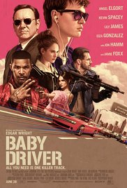

2h 31min | Action, Adventure, Sci-Fi | 24 March 2016
The general public is concerned over having Superman on their planet and letting the "Dark Knight" - Batman - pursue the streets of Gotham. While this is happening, a power-phobic Batman tries to attack Superman.,Meanwhile Superman tries to settle on a decision, and Lex Luthor, the criminal mastermind and millionaire, tries to use his own advantages to fight the "Man of Steel".
|
|
|---|
1h 32min | Crime, Horror, Mystery | 27 October 2017
Bodies are turning up around the city, each having met a uniquely gruesome demise. As the investigation proceeds, evidence points to one suspect: John Kramer, the man known as Jigsaw, who has been dead for ten years.

|
|---|
2h 42min | Action, Adventure, Fantasy | 17 December 2009
When his brother is killed in a robbery, paraplegic Marine Jake Sully decides to take his place in a mission on the distant world of Pandora. There he learns of greedy corporate figurehead Parker Selfridge's intentions of driving off the native humanoid "Na'vi" in order to mine for the precious material scattered throughout their rich woodland. In exchange for the spinal surgery that will fix his legs, Jake gathers intel for the cooperating military unit spearheaded by gung-ho Colonel Quaritch, while simultaneously attempting to infiltrate the Na'vi people with the use of an "avatar" identity. While Jake begins to bond with the native tribe and quickly falls in love with the beautiful alien Neytiri, the restless Colonel moves forward with his ruthless extermination tactics, forcing the soldier to take a stand - and fight back in an epic battle for the fate of Pandora.
|  |
|---|
1h 52min | Action, Crime, Music | 24 August 2017
Baby is a young and partially hearing impaired getaway driver who can make any wild move while in motion with the right track playing. It's a critical talent he needs to survive his indentured servitude to the crime boss, Doc, who values his role in his meticulously planned robberies. However, just when Baby thinks he is finally free and clear to have his own life with his new girlfriend, Deborah, Doc coerces him back for another job. Now saddled with a crew of thugs too violently unstable to keep to Doc's plans, Baby finds himself and everything he cares for in terrible danger. To survive and escape the coming maelstrom, it will take all of Baby's skill, wits and daring, but even on the best track, can he make it when life is forcing him to face the music?